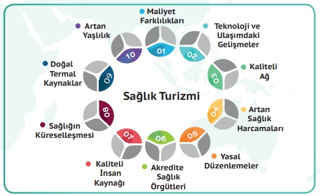

Sağlık Turizminin Gelişimine Rol Oynayan Faktörler
Dünya çapında sağlık turizminin bu kadar çok ve bu kadar hızlı gelişmesindeki sebepler şunlardır:
Dünya’da yaşanan küreselleşme süreci:
- 1. Tedavi hizmeti almak için hastanın ülkesinde uzun süre beklemek zorunda olması,
- 2. Hastaların gittikçe daha çok bilinçlenmesi ve sektörlerde yeni pazar arayışlarının bulunması,
- 3. Bilimsel ve teknolojik alanda ilerlemiş ülkelerde daha iyi sağlık hizmetleri koşullarından yararlanma isteği bulunması,
- 4. Bilgiye erişme alanında ve iletişim teknolojilerindeki hızlı gelişmeler,
- 5. Çok gelişmiş ülkelerde sunulan sağlık hizmetlerinin pahalı olması, aynı düzeyde hizmetlerin farklı ülkelerde daha ucuza sağlanabilmesi,
- 6. Son dönemlerde gittikçe yaygınlaşan gelişmiş ulaşım teknikleri sayesinde her yere daha kolay ulaşılabilir olunması,
- 7. Sağlık sektöründe yeni pazarlar oluşturulması isteği ve bu alanda yapılan çalışmalar.
- 8. Yaşlı nüfusun Dünya çapında gittikçe artış göstermesi,
- 9. Uyuşturucu ya da farklı madde bağımlılarının daha başka ortamlarda ve uygun koşullarda rehabilite edilmek istemesi,
- 10. Avrupa Birliği ve benzeri dinamik oluşumların artış göstermesi,
- 11. Sahip olunan sağlık sigortası ile ilgili çeşitli ülkelerde yaşanabilecek olası sorunlar,
- 12. Yaşlı ve engelli bireyler ile kronik hastalıkları olan insanların hem tedavi olmak, hem de turistik gezi yapma isteğinde bulunması,
- 13. Farklı ülkelerde doğal termal kaynaklara sahip olunması,
- 14. Sağlık hizmeti için gidilecek ülkede akredite sağlık kuruluşlarını varlığı, sağlık turizmini destekleyen başlıca faktörlerdir.
